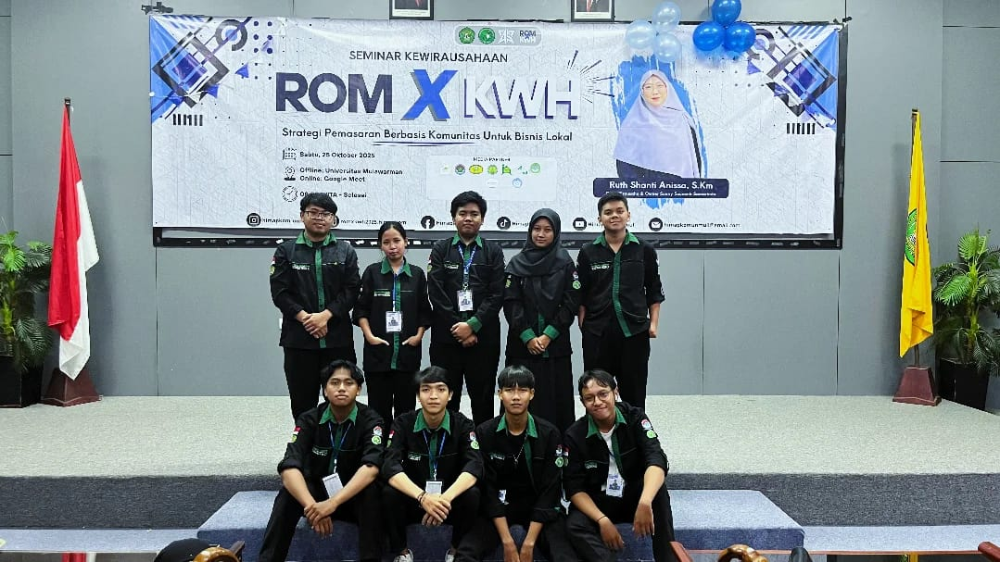
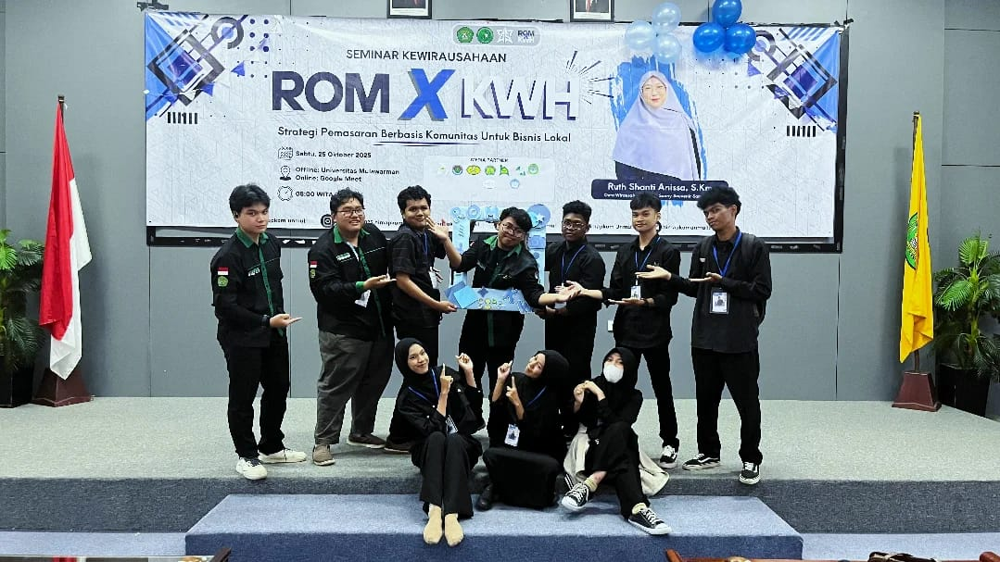
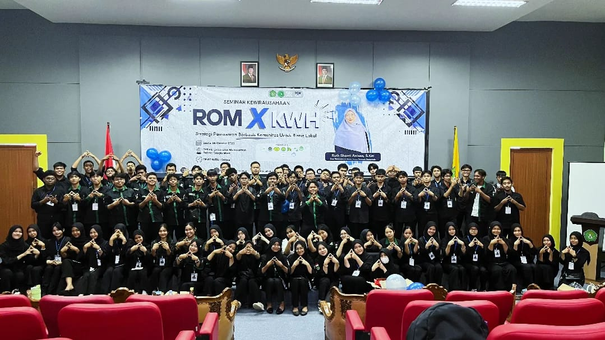

Richardo Reksi Ratag
Mahasiswa Pendidikan Komputer - FKIP Universitas Mulawarman
Halaman CV Saya
Profil Singkat
Saya adalah mahasiswa Pendidikan Komputer di FKIP Universitas Mulawarman dengan IPK terakhir 3.8 / 4.0. Sebelumnya saya menempuh pendidikan di SMKN 1 Tanah Grogot. Saya memiliki minat dan kemampuan pada bidang pengembangan web, backend website, jaringan komputer, Mikrotik, dan cyber security dasar.
Data Diri
- Nama: Richardo Reksi Ratag
- Tempat, Tanggal Lahir: Tanah Grogot, 10 April 2006
- Status: Mahasiswa
- Program Studi: Pendidikan Komputer
- Fakultas: FKIP Universitas Mulawarman
- IPK Terakhir: 3.8 / 4.0
Highlight
Pendidikan
Pendidikan menengah dengan dasar keterampilan komputer, jaringan, dan teknologi.
FKIP Universitas Mulawarman — IPK terakhir 3.8 / 4.0
Keahlian
Web Development
Frontend dan backend website untuk kebutuhan project sederhana hingga menengah.
Networking
Jaringan komputer, subnetting, konfigurasi dasar, dan pemahaman Mikrotik.
Cyber Security Basic
Pemahaman dasar keamanan jaringan, Linux, dan pengenalan pentesting dasar.
Sertifikat
Tools / Teknologi
Portofolio / Project
Bahasa
Galeri CV
Foto Pribadi dan Dokumentasi


